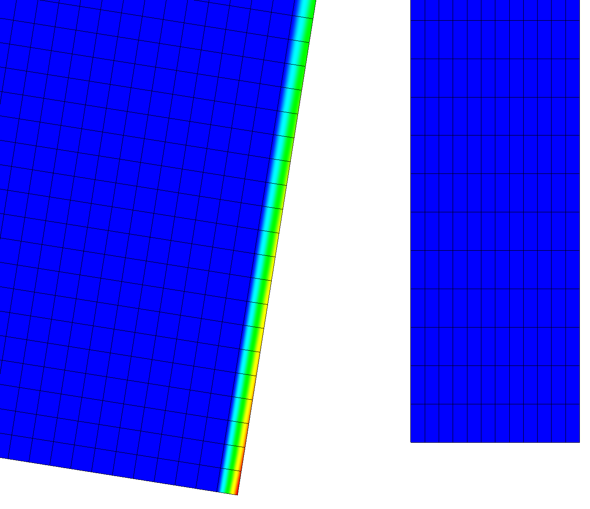

- paired_boundaryThe boundary to find the distance to.
C++ Type:BoundaryName
Controllable:No
Description:The boundary to find the distance to.
- variableThe name of the variable that this object applies to
C++ Type:AuxVariableName
Unit:(no unit assumed)
Controllable:No
Description:The name of the variable that this object applies to
NearestNodeDistanceAux
The NearestNodeDistanceAux uses the geometric search system to find the shortest distance from a node where the AuxVariable is defined to a node on a different boundary. Normally, this object is used to find distances between two boundaries but can be used to find the distance from all nodes in one body to some boundary.

Distance to nearest node on opposite boundary is shown.
Description and Syntax
Stores the distance between a block and boundary or between two boundaries.
Input Parameters
- blockThe list of blocks (ids or names) that this object will be applied
C++ Type:std::vector<SubdomainName>
Controllable:No
Description:The list of blocks (ids or names) that this object will be applied
- boundaryThe list of boundaries (ids or names) from the mesh where this object applies
C++ Type:std::vector<BoundaryName>
Controllable:No
Description:The list of boundaries (ids or names) from the mesh where this object applies
- check_boundary_restrictedTrueWhether to check for multiple element sides on the boundary in the case of a boundary restricted, element aux variable. Setting this to false will allow contribution to a single element's elemental value(s) from multiple boundary sides on the same element (example: when the restricted boundary exists on two or more sides of an element, such as at a corner of a mesh
Default:True
C++ Type:bool
Controllable:No
Description:Whether to check for multiple element sides on the boundary in the case of a boundary restricted, element aux variable. Setting this to false will allow contribution to a single element's elemental value(s) from multiple boundary sides on the same element (example: when the restricted boundary exists on two or more sides of an element, such as at a corner of a mesh
Optional Parameters
- control_tagsAdds user-defined labels for accessing object parameters via control logic.
C++ Type:std::vector<std::string>
Controllable:No
Description:Adds user-defined labels for accessing object parameters via control logic.
- enableTrueSet the enabled status of the MooseObject.
Default:True
C++ Type:bool
Controllable:Yes
Description:Set the enabled status of the MooseObject.
- search_methodnearest_node_connected_sidesChoice of search algorithm. All options begin by finding the nearest node in the primary boundary to a query point in the secondary boundary. In the default nearest_node_connected_sides algorithm, primary boundary elements are searched iff that nearest node is one of their nodes. This is fast to determine via a pregenerated node-to-elem map and is robust on conforming meshes. In the optional all_proximate_sides algorithm, primary boundary elements are searched iff they touch that nearest node, even if they are not topologically connected to it. This is more CPU-intensive but is necessary for robustness on any boundary surfaces which has disconnections (such as Flex IGA meshes) or non-conformity (such as hanging nodes in adaptively h-refined meshes).
Default:nearest_node_connected_sides
C++ Type:MooseEnum
Controllable:No
Description:Choice of search algorithm. All options begin by finding the nearest node in the primary boundary to a query point in the secondary boundary. In the default nearest_node_connected_sides algorithm, primary boundary elements are searched iff that nearest node is one of their nodes. This is fast to determine via a pregenerated node-to-elem map and is robust on conforming meshes. In the optional all_proximate_sides algorithm, primary boundary elements are searched iff they touch that nearest node, even if they are not topologically connected to it. This is more CPU-intensive but is necessary for robustness on any boundary surfaces which has disconnections (such as Flex IGA meshes) or non-conformity (such as hanging nodes in adaptively h-refined meshes).
- seed0The seed for the master random number generator
Default:0
C++ Type:unsigned int
Controllable:No
Description:The seed for the master random number generator
- use_displaced_meshTrueWhether or not this object should use the displaced mesh for computation. Note that in the case this is true but no displacements are provided in the Mesh block the undisplaced mesh will still be used.
Default:True
C++ Type:bool
Controllable:No
Description:Whether or not this object should use the displaced mesh for computation. Note that in the case this is true but no displacements are provided in the Mesh block the undisplaced mesh will still be used.
Advanced Parameters
- execute_onLINEAR TIMESTEP_ENDThe list of flag(s) indicating when this object should be executed. For a description of each flag, see https://mooseframework.inl.gov/source/interfaces/SetupInterface.html.
Default:LINEAR TIMESTEP_END
C++ Type:ExecFlagEnum
Controllable:No
Description:The list of flag(s) indicating when this object should be executed. For a description of each flag, see https://mooseframework.inl.gov/source/interfaces/SetupInterface.html.
- execution_order_group0Execution order groups are executed in increasing order (e.g., the lowest number is executed first). Note that negative group numbers may be used to execute groups before the default (0) group. Please refer to the auxkernel documentation for ordering of auxkernel execution within a group for example elemental vs nodal or between scalar, regular, vector and array auxkernels.
Default:0
C++ Type:int
Controllable:No
Description:Execution order groups are executed in increasing order (e.g., the lowest number is executed first). Note that negative group numbers may be used to execute groups before the default (0) group. Please refer to the auxkernel documentation for ordering of auxkernel execution within a group for example elemental vs nodal or between scalar, regular, vector and array auxkernels.
Execution Scheduling Parameters
- prop_getter_suffixAn optional suffix parameter that can be appended to any attempt to retrieve/get material properties. The suffix will be prepended with a '_' character.
C++ Type:MaterialPropertyName
Unit:(no unit assumed)
Controllable:No
Description:An optional suffix parameter that can be appended to any attempt to retrieve/get material properties. The suffix will be prepended with a '_' character.
- use_interpolated_stateFalseFor the old and older state use projected material properties interpolated at the quadrature points. To set up projection use the ProjectedStatefulMaterialStorageAction.
Default:False
C++ Type:bool
Controllable:No
Description:For the old and older state use projected material properties interpolated at the quadrature points. To set up projection use the ProjectedStatefulMaterialStorageAction.